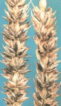
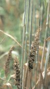

Búza kőüszög
Tilletia caries, T. foetida, T. intermedia
A gombabetegség a maggal terjed, a csírázó növényt fertőzi meg (csírafertőző). A szemtermés helyén zsíros, rothadó halra emlékeztető szagú üszögpuffancsok találhatók a kalászban. Csépléskor, a kombájn vagy a kézi cséplés az üszögpuffancsokat szétverik, így az üszögspórák az egészséges magvak felszínére tapadnak. Az elvetett magvakból beteg, borzas, terpedt kalászú növények fejlődnek.
Védekezés:
- csávázás gombaölő szerekel (Quinolate-V-4-X, Sportak,
TMTD, Prelude)